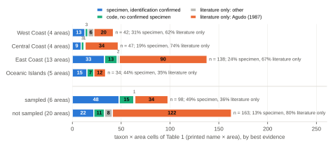

Background
Regional species inventories are a basic product of biodiversity research, and among the hardest to reuse. They are typically published as tables in a PDF: names in a column, localities as headers, and a legend of codes saying where each record comes from. That layout is efficient for a reader and opaque to software. It also fixes the taxonomy at the date of publication: when a name is later synonymised, the inventory cannot say so, and aggregators that ingest it later can only match the names it printed. The FAIR principles (Wilkinson et al. 2016) ask for data that are findable, accessible, interoperable and reusable by machines as well as people. For legacy inventories the gap between the published table and that goal is mostly data engineering: extraction, harmonisation, identifiers and provenance.
The community standards for closing this gap exist. Darwin Core (Wieczorek et al. 2012) provides the shared vocabulary for occurrences, taxa and locations, and Darwin-SW (Baskauf & Webb 2016) supplies the relationships between them that Darwin Core leaves undefined. Taxonomic databases such as the World Register of Marine Species (WoRMS) (WoRMS Editorial Board 2026), the GBIF Backbone Taxonomy (GBIF Secretariat 2026) and NCBI Taxonomy (Schoch et al. 2020) provide persistent identifiers for names. The Environment Ontology (ENVO) (Buttigieg et al. 2013; Buttigieg et al. 2016) does the same for habitats. Mappings between local and external identifiers can be published with their justification using SSSOM (Matentzoglu et al. 2022), and provenance can be expressed with PROV-O (Lebo et al. 2013). Shape constraints in SHACL (Knublauch & Kontokostas 2017) can check the resulting graph. What is less often shown is how to apply these pieces together to one published inventory, so that every statement in the graph can be traced back to the table cell it came from, no value is invented, and the reuser learns how much each record can bear.
Here we take the inventory of shallow-water sea anemones sensu lato (Actiniaria, Corallimorpharia, Ceriantharia and Zoantharia) of Venezuela (González-Muñoz et al. 2016) as a test case. The present author is one of its co-authors. The article combines three kinds of evidence in 35 pages:
- a distribution matrix of 52 taxa across 27 localities, with codes for the authors' surveys, museum specimens and nine earlier publications;
- 128 specimens collected in the study;
- 84 specimens of the Museo Oceanológico Hermano Benigno Román (MOHBR) collection that the authors re-examined.
It is open access under CC BY 4.0, and its data are dedicated to the public domain (CC0).
Our aims were:
- to extract all of its tables, and the name, authority and habitat of each species account, from the published PDF without manual transcription, and to measure how accurate the extraction is;
- to harmonise them to a Darwin Core–aligned canonical model while keeping every value as published;
- to resolve names and habitats to persistent identifiers, recording how each match was made;
- to check data quality as code, and to grade the evidence behind each record, before building an RDF knowledge graph;
- to validate the graph with SHACL and query it with SPARQL;
and to make the whole process deterministic, so that a rebuild from the same inputs reproduces every output byte for byte (Fig. 1).

Fig. 1 The pipeline. Seven stages run from the published PDF to a queried knowledge graph. Two quality gates (orange) stop the run on a critical data-quality failure, a disagreement of the extraction census, or a SHACL violation. Curated inputs (green) carry every correction that needed judgement, and the API cache makes identifier resolution repeatable.
Table 1 Sources of data in the article and records extracted from each
| Part of the article | Content | Extracted |
|---|---|---|
| Table 1 (pp. 3–10) | Presence matrix: taxa × localities; cell codes for evidence and new records; bold headers for sampled localities | 52 taxa, 27 localities, 344 codes in 263 cells |
| Table 2, Appendix 1 (pp. 26–28) | Specimens collected in the study: field code, MOHBR number, locality, state, coordinates | 128 specimens |
| Table 3, Appendix 2 (pp. 29–31) | MOHBR specimens re-examined: previous and current identification, date, collector | 84 specimens |
| Systematics (pp. 2–25) | Species accounts: name, authority, habitat paragraph | 26 accounts |
Methods
Source data and the author's relationship to it
The publisher's PDF (González-Muñoz et al. 2016) is the only input. Its SHA-256 checksum is recorded in a manifest, and a test fails if the file changes. Table 1 lists the sources in the article and what was extracted from each. The rest of each species account (distribution text, remarks, depth) was not extracted.
The author of this paper is a co-author of the source article and made every curation decision described below. No independent taxonomist has yet audited them; they are published in full, with their evidence, for that purpose (Additional file 3). One piece of information does not come from the PDF: that the Isla de Cubagua material was collected over several years. It comes from the author's own knowledge of the fieldwork. It is used only to justify leaving those collection dates empty, and the curated row that records it says that it cannot be traced to the article.
Extraction
The tables have no column rules, so a line-based table finder cannot read them. Extraction works on word bounding boxes obtained with pdfplumber (Singer-Vine 2026):
- Columns are recovered from the gaps between header words. Words within a column header are separated by at most 3 pt, and columns by at least 6 pt.
- Rows are anchored on the row numbers printed in the margin.
- Bold headers in Table 1 are read from the font name; they mark the six localities sampled by the authors.
Table 1 is printed sideways and in two blocks of columns that repeat the same taxon rows. The parser requires the two blocks to agree on every taxon name. Extraction is verbatim: typing errors, impossible dates and blank cells are kept, and every row carries its page and a locator such as "Table 2, row 25". The parser raises an error instead of guessing whenever the sequence of row numbers breaks, a cell contains a code that is not in the legend, or the number of columns is unexpected.
Extraction census. These checks conserve counts, but none of them would catch a code read
into the wrong cell. The tables are small, so every value was read a second time and compared,
as a census rather than a sample. The second reading uses a different PDF engine (Poppler's
pdftotext, instead of pdfminer under pdfplumber) and a separate, simpler parser. A Table 1
code agrees when both readings put it in the same row and column. A field of Tables 2 and 3
agrees when all of its tokens are found in the same printed row and the fields appear left to
right in column order. Positive controls show that the comparison detects a code shifted to the
next column, a code moved to another row, two columns swapped, a value read from another row,
and a changed coordinate digit. Any disagreement stops the pipeline.
Canonical model and harmonisation
The canonical model is written in LinkML (LinkML contributors 2026) as nine classes:
source document, reference, taxon, taxon-name variant, locality, occurrence, identification,
distribution assertion and habitat statement. Every slot that has a Darwin Core equivalent
declares it as slot_uri, and the schema is the single contract for column names, types,
required fields, patterns and permitted values. How each canonical field is produced is listed
in a source-to-canonical mapping table of 60 rows. Each row gives the source
column, canonical field, Darwin Core term and one of 25 named transformation rules.
A test keeps the table and the rule registry in the code identical in both directions.
Four modelling decisions matter for what follows.
Taxa are name usages. A taxon record is a name as used in the article
(dwc:nameAccordingTo the article), not a taxon concept. External identifiers are attached
later as mappings, so a name synonymised since then stays visible. For the literature records
the article reports, the graph holds the 2016 compilers' names; whether they updated the names
used in the original sources cannot be known from the article. Open nomenclature ("cf.",
"sp.") is kept in dwc:identificationQualifier (237 identifications, 9 of them
qualified), and the base name is resolved.
Specimens and Table 1 assertions are kept apart. A code in Table 1 summarises evidence, some of it specimens that are also listed in Tables 2 and 3. Treating each code as an independent occurrence would count the same organism twice. Table 1 assertions therefore become their own records (Darwin Core basis of record MaterialCitation), each with its own event, and are compared with the specimens during the data-quality checks instead of being merged.
Habitat belongs to the taxon. The article describes habitat in each species account, not per record, and copying it onto occurrences would invent per-record habitat.
Judgement is curated, not coded. Corrections that need judgement are rows in curated tables, each with its evidence and the date of the author's review: 71 rows in six files (Additional file 3). They cover four misspellings of names in Table 2 (e.g. Phymantus for Phymanthus), spelling variants of state names, links from collecting sites to Table 1 localities, collection dates stated only in the Methods of the article, decisions on fuzzy name matches, and the habitat vocabulary. Values that cannot be harmonised become nulls, and the printed value is kept in a verbatim field. Examples are an impossible date ("31/04/2012"), a catalogue number "In progress", a current identification "not identified", and "–" for a missing locality.
Identifiers are deterministic UUIDv5 values in a namespace derived from the article's DOI. The natural key of a specimen is its catalogue number, or its field code where it has none, and never its identification, so a later re-identification does not change the identifier.
Name resolution and habitat alignment
Each of the 61 names was looked up in WoRMS (WoRMS Editorial Board 2026), the GBIF Backbone Taxonomy (GBIF Secretariat 2026) and NCBI Taxonomy (Schoch et al. 2020). Every name receives one record per service, whether resolved or not, shaped after SSSOM (Matentzoglu et al. 2022): subject, predicate, object, justification, tool and date. The acceptance policy is the same for all services:
- Accepted: an exact name, unique within Cnidaria, at the same rank, recorded as
skos:exactMatch(Miles & Bechhofer 2009) with confidence 1. - Homonyms: where WoRMS holds several records for the same name, the record whose authority matches the authority printed in the article is kept.
- Fuzzy matches become candidates and never become identifiers unless the author accepts them in a curated file. Each accepted variant records its case under the Code (ICZN 1999): mandatory gender agreement of an adjectival epithet (Art. 34.2), or an incorrect subsequent spelling (Arts 33.3 and 33.4). The match score is exported as an SSSOM similarity score, not as a confidence: it only ordered candidates for review.
- Accepted names: for names that are not accepted, the record of the accepted name is
retrieved as well, so both become nodes of the graph, linked by
dwc:acceptedNameUsageID. - NCBI fallback: if a name is absent from NCBI Taxonomy, its WoRMS accepted name is tried
and the link is recorded as
skos:closeMatch, never as an exact match.
All mappings are name-level. They say that two records carry the same name, not that the providers circumscribe the same taxon, and no concept equivalence is asserted.
Three further analyses describe what the links rest on. First, for every name whose WoRMS record is not accepted, the WoRMS sources that document the change (a new combination, a synonymy or a taxonomy source) were retrieved, and the relation was classified from the WoRMS status and names. Second, every name unresolved in NCBI was queried again under all NCBI name classes, under every WoRMS synonym of its accepted name, and at genus level. For each linked taxon, the number of INSDC nucleotide records of the taxon and its descendants was counted, and INSDC was searched for sequences that cite the MOHBR collection. Third, the release of each service was recorded: the GBIF Backbone dataset published 28 August 2023, NCBI Taxonomy as updated on 24 November 2026, and ENVO release 2026-10-23. WoRMS publishes no release number, so the access date of each response is its version.
Habitat paragraphs were aligned to ENVO in two separate steps. First, a curated vocabulary of 13 phrases maps wording in the article to ENVO class labels; this is a human decision. Second, each label is resolved to an IRI through the EBI Ontology Lookup Service, by exact label only. A phrase preceded by a negation within a few words is recorded as negated and not annotated; for example, "but not intertidal zones" does not yield intertidal zone.
All 398 API responses (253 for resolution and 145 for the analyses above; retrieved 24 November 2026) are cached and committed with the code. Each mapping cites the cached response it was derived from. In offline mode, as in continuous integration, no request leaves the machine, and a missing response becomes an unresolved record rather than a guess.
Data quality as code
Data quality is checked before any RDF is produced. Column-level checks are generated from the LinkML schema as pandera (Bantilan 2020) schemas, giving 269 checks of type, presence, uniqueness, pattern, permitted values and range. Because the same schema drives both, the contract and its enforcement cannot diverge.
Cross-table rules cover what a single column cannot. They are of two severities:
- 15 critical rules. These cover referential integrity, uniqueness of specimens and Table 1 assertions, exactly one current identification per specimen, coordinates given as a pair and inside Venezuela's coast and islands, new-record codes only on survey records, consistency of mappings, and closure of WoRMS accepted-name pointers. Any critical failure stops the pipeline.
- 11 warnings. These record incompleteness and disagreement between sources
without changing anything. Among them are four cross-source rules that compare Table 1 with
the specimen tables in both directions:
- W08 and W10: a survey (*) or museum (a) code in Table 1 with no specimen of that taxon from that locality in Table 2 or Table 3;
- W09 and W11: a specimen with no corresponding code in Table 1.
Every rule returns the failing rows, not only a count, and every rule, critical or warning, has a positive control: a test injects a fault and requires the rule to report it.
Why each cross-source warning fires. Each row flagged by W08–W11 was given one cause, the first that applies in this order:
- the specimen and Table 1 name the same taxon differently (same WoRMS accepted name);
- a specimen of the same family is identified only above species level;
- the specimen was re-identified and Table 1 keeps its previous name;
- the article could not confirm the identification ("not identified");
- the flag depends on an uncertain site-to-area link;
- Table 1 lists the taxon there under another code;
- none of these: the tables differ as printed.
The rules were also re-run with all 22 curated site-to-area links that are not an exact name or a printed park name set to unlinked, and then to linked, and each flagged row was checked for the paired signature that a column shift would leave: a code without a specimen and a specimen without a code for the same taxon in adjacent columns.
Evidence tiers. From the same comparison, every Table 1 assertion receives one evidence tier: a survey record with or without a voucher in Table 2; a museum record traced or not traced to a specimen in Table 3 (Appendix 2, to which the legend refers code "a"); or a literature record, cited by the article and not consulted here. Matching is by WoRMS accepted name, and for museum records also by the specimen's previous identification.
Knowledge graph
The graph reuses existing vocabularies and mints a project term only where none fits.
- Occurrences, organisms, events, identifications and taxa use Darwin Core
(Wieczorek et al. 2012). Darwin-SW (Baskauf & Webb 2016) links them: occurrence → event
→ location, occurrence → organism, identification → organism. WoRMS records carry
dwc:taxonomicStatus,dwc:nameAccordingTowith the access date, anddwc:acceptedNameUsageID. - Taxa are linked to external records with SKOS rather than
owl:sameAs, so that a name usage of 2016 is not merged with today's accepted name. - Each identifier link is also reified as an SSSOM mapping record. The record carries its justification (SEMAPV), confidence or similarity score, request and date, and is derived from the cached response with PROV-O (Lebo et al. 2013).
- Every record is
prov:wasDerivedFromthe article's DOI. A qualified derivation gives the locator in the article, the page and the pipeline stage.
The 114 classes, properties and concepts the graph may use are listed in a term registry. Each is verified against a cached copy of the vocabulary that defines it, including the TDWG term lists, the Darwin-SW ontology, the SSSOM schema and SEMAPV. The graph builder refuses any term not in the registry. Checking the vocabularies changed three decisions:
- Each specimen has its own organism node, because
dsw:identifieshas the rangedwc:Organism. dwciri:toTaxonis used instead ofdsw:toTaxon, whose range would retype every taxon as a TDWG taxon concept.- ENVO substrates are separated from habitats using the recent
dwciri:substrateterm.
The project vocabulary has 18 terms (Fig. 2): the source locator and page, the new-record and doubtful-record flags, the sampled-locality flag, an IRI-valued link to the accepted name, the habitat-statement class, the evidence tier, and two small concept schemes (evidence kinds and evidence tiers). The graph was built with RDFLib (RDFLib Team 2026) and serialised as Turtle and JSON-LD.

Fig. 2 The data model, simplified. Specimens follow the Darwin-SW pattern (occurrence, event, location; occurrence, organism, identification). Names used in the article are linked to WoRMS, GBIF and NCBI records with SKOS, and each link is also reified as an SSSOM mapping record (not drawn). Every record derives from the article's DOI through a qualified PROV-O derivation that carries its table, row and page.
Validation, queries and endpoint
The graph is validated with SHACL (Knublauch & Kontokostas 2017) using pySHACL (Sommer 2026), with SPARQL-based targets and constraints enabled and no inference. There are 14 node shapes for cardinalities, datatypes, identifier formats, evidence tiers and provenance. SHACL-SPARQL constraints cover rules that a property path cannot express, such as one current identification per organism, or a mapping record that must describe a SKOS triple asserted in the graph. Only results of severity Violation stop the pipeline. A test injects sixteen independent faults into a copy of the graph, covering every node shape, and requires each to be reported on the right node.
There are eight SPARQL queries (Harris & Seaborne 2013) over the graph and three SQL queries over the canonical tables in DuckDB (Raasveldt & Mühleisen 2019). Each SQL query must return exactly the rows of its SPARQL counterpart. The graph was also loaded into an Oxigraph SPARQL endpoint (Pellissier Tanon 2026) through the SPARQL 1.1 Graph Store Protocol, and every query was run through the SPARQL 1.1 Protocol and compared with the in-process results.
Reproducibility
The pipeline is a Python 3.12 package with a locked environment. It runs as seven stages (Fig. 1), each logging its record counts in and out. Continuous integration on every pull request runs the linter and the test suite, then the pipeline offline from the cached API responses, and fails if any regenerated output differs from the committed one. A Docker build reruns the pipeline and the endpoint check.
The claim is determinism, not validity: the same PDF, cache and lockfile give byte-identical outputs. The Turtle file contains no blank nodes, the JSON-LD is written in a sorted canonical form, and the SHACL report is canonicalised. Continuous integration runs on one platform (Linux x86-64). Re-running the resolution against the live services would give a different, newer snapshot; that is a deliberate step that renews the cache.
Development used one feature branch and one reviewed pull request per stage. Claude Code (Anthropic) was used as a coding and writing assistant; all curation decisions and results were reviewed by the author.
Results
Extraction and harmonisation
All parts of the article listed in Table 1 were extracted. The row counts match the numbers the article states: 128 collected and 84 examined specimens. The second, independent transcription agreed with the extraction on all 263 occupied cells and all 344 codes of Table 1, on all 1,024 fields of Table 2 and all 587 fields of Table 3: no disagreement. Harmonisation produced the canonical tables in Table 2. No record was lost: every specimen became one occurrence, and every Table 1 code became one assertion. The only exception is the two codes for new records ("N"), which qualify a survey code and were merged into it. Counts that cannot be rebuilt from the text alone are derived in the reconciliation table (Additional file 1).
Table 2 Canonical tables and their Darwin Core or other standard counterpart. Specimens are PreservedSpecimen occurrences; Table 1 assertions are MaterialCitation occurrences; taxon mappings are one SSSOM row per name and service.
| Table | Standard | Rows |
|---|---|---|
| taxon (name usage) | dwc:Taxon | 61 |
| locality (26 areas, 45 sites) | dcterms:Location | 71 |
| occurrence (specimens) | dwc:Occurrence | 212 |
| identification (25 superseded) | dwc:Identification | 237 |
| distribution (Table 1) | dwc:Occurrence | 342 |
| habitat statement | dwc:habitat | 26 |
| taxon mapping | SSSOM | 183 |
The 61 names are the 52 taxa of Table 1, one family-level identification in Table 2, and eight previous identifications in Table 3. Of the 27 columns of Table 1, 26 are areas; the last, "Open Sea Distribution", is not a place, and its two assertions have no location. Of the 45 collecting sites, 41 were linked to a Table 1 area; three links the author judged uncertain were left unlinked, and one site has no Table 1 column.
Working through the article cell by cell brought to light problems that a reader would hardly notice:
- four misspelled names in Table 2;
- an impossible date in Table 3 ("31/04/2012");
- one missing state and two missing localities;
- three museum specimens whose identification "could not be corroborated";
- the same order named Zoanthidea in Table 1 and Zoantharia in the species accounts;
- Zoanthus pulchellus in Table 1 but Z. cf. pulchellus in its species account and in Table 2.
Coordinates exist only for the 17 collecting sites of Table 2, which fall in five of the 26 areas; no locality was geocoded. Collection dates are stated in the Methods of the article for four of the sampled areas, so 59 of the 128 collected specimens carry a date (November 2012). The others were left undated rather than assumed. The literature assertions carry no date at all; their source's year of publication is only an upper bound.
Identifier resolution
WoRMS resolved all 61 names and GBIF 59. NCBI Taxonomy
resolved 34 by exact name and
ten more only through their WoRMS accepted name (skos:closeMatch) (Fig. 3,
Table 3). The three services are not independent: the GBIF Backbone draws on WoRMS for marine
groups, so agreement between them is not cross-validation. WoRMS held more than one record for
four of the names. For three of them, the authority
printed in the article picked the right record. For example, Zoanthus sociatus (Ellis, 1768)
was matched to the accepted record, not to a taxon inquirendum of the same name by Le Sueur
(1818). The remaining name, Ceriantheomorphe brasiliensis, is printed without an authority, and
both of its records point to the same accepted name, which the author confirmed.
The fuzzy candidates show why fuzzy matches are never accepted automatically. GBIF matched the historical label Palythoa caribbeorum to Palythoa caribbea, a different species, with a score of 0.98. The author rejected that match and accepted WoRMS' phonetic match to P. caribaeorum, as an incorrect subsequent spelling. The decision rests on Table 3 of the article, which gives the two names as the previous and current identification of the same specimen; it was not checked against the voucher. All eight curated decisions (seven accepted, one rejected) are rows with evidence, and the pipeline fails if any of them is never used.
Table 3 Identifier resolution of the 61 names per service.
Exact: skos:exactMatch, including curated orthographic variants accepted
by the author. Via accepted name: NCBI holds only the WoRMS accepted name,
skos:closeMatch.
| Service | Exact | of which curated | Via accepted name | Unresolved |
|---|---|---|---|---|
| WoRMS | 61 | 4 | – | 0 |
| GBIF | 59 | 3 | – | 2 |
| NCBI | 34 | 0 | 10 | 17 |

Fig. 3 Identifier resolution of the 61 names used in the
article, by service. Exact name: an automatic, unique match within Cnidaria at the same
rank. Curated variant: a fuzzy or ambiguous match accepted by the author with recorded
evidence. Via WoRMS accepted name: NCBI holds only the accepted name, linked as
skos:closeMatch. The counts are given in Table 3.
The 17 names without an NCBI node were queried again under all name classes and synonyms. Three have a node under another name, and they are reported rather than linked (Additional file 4). One shows why name-level links are not concept equivalence: NCBI files Bunodeopsis antilliensis, which WoRMS accepts, as a name of B. globulifera. For three of the unresolved names, NCBI holds no node for the genus either. Having a node is not the same as having sequences: the 44 linked taxa have a median of 22 INSDC nucleotide records, 10 have ten or fewer, and one has none. No INSDC record cites the MOHBR collection (0 hits), so none of the 212 specimens can yet be linked to a sequence. Per-marker counts are outside the scope of this paper.
Linking each name to its WoRMS record shows how far the names in the inventory differ from current taxonomy. WoRMS gives a different accepted name for 16 of the names used in the article (Table 4). They fall into four groups:
- Seven names the article uses as valid. For six of them the accepted name differs, for example Parazoanthus catenularis, transferred to Bergia by Montenegro et al. (2015); Exaiptasia pallida is instead an alternative representation of E. diaphana whose priority awaits an ICZN ruling. WoRMS dates three of these changes before 2016, two both before and after, and gives no date for two. Part of the difference is therefore the article's lag, not later change.
- Two names the article itself marks with †, which its legend defines as "species currently considered as invalid". One, Anthopleura cascaia, is a nomen nudum: as an unavailable name it cannot be a synonym, and its accepted name is the WoRMS editors' judgement of the intended taxon.
- Three old museum labels that the authors themselves re-identified. One of them, Aiptasia pallida, is recorded by WoRMS as moved to a new genus by Grajales & Rodríguez (2014).
- Four orthographic variants whose matched WoRMS record is the accepted name itself or its spelling (two cases of gender agreement, two incorrect subsequent spellings).
The inventory remains as published. The graph adds today's view next to it, with the date on which it was taken.
Table 4 Names used in the article whose accepted name in WoRMS differs (24 November 2026). Use in article: how the article uses the name. Relation: nomenclatural relation to the accepted name, from the WoRMS status and names. Act: WoRMS sources that document the change (new combination, synonymy or taxonomy source), with year; "not given" where WoRMS cites none.
| Name in the article | Use in article | Relation | Act | Accepted name (AphiaID) |
|---|---|---|---|---|
| Aiptasia pallida | old museum label | synonym | Grajales & Rodriguez 2014 | Exaiptasia diaphana (1264073) |
| Haliplanella luciae | old museum label | synonym | not given | Diadumene lineata (395099) |
| Lebrunia danae | old museum label | synonym | not given | Lebrunia neglecta (742298) |
| Bunodosoma cavernata | spelling variant | orthographic variant: gender agreement (Art. 34.2) | not given | Bunodosoma cavernatum (592952) |
| Ceriantheopsis americanus | spelling variant | orthographic variant: gender agreement (Art. 34.2) | - | Ceriantheopsis americana |
| Homostichantus duerdenii | spelling variant | orthographic variant: incorrect subsequent spelling (Arts 33.3, 33.4) | - | Homostichanthus duerdeni |
| Palythoa caribbeorum | spelling variant | orthographic variant: incorrect subsequent spelling (Art. 33.3) | - | Palythoa caribaeorum |
| Corynactis caribbeorum | used as valid | new combination (genus transfer) | Fautin 2011, Ocaña et al. 2017 | Pseudocorynactis caribbeorum (101017) |
| Epizoanthus cutressi | used as valid | new combination (genus transfer) | Swain et al. 2015 | Bergia cutressi (853594) |
| Exaiptasia pallida | used as valid | alternative representation (priority pending an ICZN ruling) | ICZN 2017, Grajales & Rodríguez 2014 | Exaiptasia diaphana (1264073) |
| Isaurus duchassaingi | used as valid | synonym | not given | Isaurus tuberculatus (101058) |
| Parazoanthus catenularis | used as valid | new combination (genus transfer) | Montenegro et al. 2015 | Bergia catenularis (853592) |
| Parazoanthus parasiticus | used as valid | new combination (genus transfer) | not given | Umimayanthus parasiticus (847839) |
| Parazoanthus puertoricense | used as valid | new combination (genus transfer) | Montenegro et al. 2015 | Bergia puertoricense (853593) |
| Anthopleura cascaia | † in Table 1 | nomen nudum: unavailable name; the accepted name is the WoRMS editors' judgement | not given | Anthopleura correae (1873438) |
| Zoanthus proteus | † in Table 1 | synonym | not given | Zoanthus sociatus (288843) |
Habitat alignment produced 49 ENVO annotations with 11 distinct classes, covering 24 of the 26 habitat statements. Only 26 of the 52 taxa have a species account, so 28 taxa have no annotated habitat. Of the 65 phrase matches, 49 were annotated, two were negated and left unannotated, and the rest have no ENVO class: coral rubble, named in 14 species accounts, and biotic substrates (sponges, hermit-crab shells, seagrass leaves). The latter are associations with other organisms rather than habitats, and are reported as gaps rather than forced into ENVO.
Data quality
The canonical tables passed all 269 column-level checks and all 15 critical rules. Of the 11 warnings, 10 reported a total of 46 rows (Table 5). The gaps in completeness are those of the source.
Table 5 Data-quality warnings that reported rows (no critical rule failed)
| Rule | Description | Rows |
|---|---|---|
| W01 | Verbatim date that is not a valid calendar date | 1 |
| W02 | Occurrence without locality ('-' in the source) | 2 |
| W03 | Specimen whose current identification has no taxon | 3 |
| W04 | Specimen without a MOHBR catalogue number | 1 |
| W05 | Collecting site not linked to a Table 1 area | 4 |
| W07 | Habitat statement with no ENVO annotation | 2 |
| W08 | Table 1 '*' (this survey) in a sampled area, but no Table 2 specimen of that taxon there | 13 |
| W09 | Table 2 specimen in an area, but no Table 1 '*' for that taxon and area | 7 |
| W10 | Table 1 'a' (MOHBR) in an area, but no Table 3 specimen of that taxon there | 5 |
| W11 | Table 3 specimen in an area, but no Table 1 'a' for that taxon and area | 8 |
The four cross-source rules flagged 33 rows (Additional file 2). Because the census confirmed every printed value, none of them is an extraction error, and none shows the paired signature of a column shift. 14 have an explanation:
- four involve a specimen identified only to family (Actiniidae): one survey code of Condylactis gigantea at Morrocoy may rest on it, and three specimens cannot have a species-level code;
- six specimens fall in an area where Table 1 lists the taxon, but under another code (for example a survey or literature code where the specimen would call for "a");
- two reflect one re-identification: Table 1 gives code "a" for Homostichanthus duerdeni at Playa Azul, Litoral Central, and the only MOHBR specimen from there with that previous name is now Actinoporus elegans (Table 3, row 26);
- two museum codes, for Palythoa variabilis at Morrocoy and Diadumene lineata (as Haliplanella luciae) at Golfo de Paria, match specimens that the article lists as not identified.
The other 19 remain unreconciled as printed: 12 survey codes without a voucher, two survey specimens without a survey code, two museum codes without a specimen and three museum specimens without a code. The survey codes may rest on observations or photographs, which the article does not distinguish. The museum comparisons depend on site-to-area links: with all uncertain links unlinked, W10 drops from 5 to 0 and W11 from 8 to 3; with all linked, they rise to 6 and 9. W08 and W09 do not change.
The same comparison grades every assertion of Table 1. Of the 57 survey codes, 42 have a voucher in Table 2 and 15 do not. Of the 56 museum codes, 46 can be traced to a specimen in Table 3 and 10 cannot; this includes codes in areas from which Table 3 has no specimen at all, which W10 does not count. The other 229 assertions are literature records.
Knowledge graph, validation and queries
The graph contains 20,678 triples about 3,223 subjects:
- 554 occurrences (212 specimens and 342 Table 1 assertions);
- 237 identifications;
- 128 taxa (61 name usages from the article and 67 WoRMS records);
- 164 SSSOM mapping records;
- 963 qualified derivations, one for every record derived from the article.
SHACL validation reported no result of severity Violation, nine warnings and
one informational result, all restating gaps of the source. Under the SHACL
Recommendation the graph therefore does not strictly conform, because sh:conforms is false
whenever any result is reported; the pipeline's gate is the absence of violations. Each of the
sixteen injected faults was reported on the right node.
Provenance can be queried end to end. For specimen MOHBR I-547, one query
returns its origin in the article (Table 3, row 2, p. 29). For each of
its three identifier links, it also returns the service, the predicate, the
justification, the confidence, the request URL and the time of retrieval. All
eight SPARQL queries returned identical rows on RDFLib and on the Oxigraph
endpoint, and each SQL query returned the same rows as its SPARQL counterpart.
What the distribution rests on
Of the 261 taxon × area cells of Table 1, 96 are supported by a survey or museum code, 165 (63%) by literature only, and 156 (60%) by one monograph alone (Agudo 1987) (Fig. 4). That monograph accounts for 207 of the 229 literature codes (90%). It is cited through the article and was not consulted here, so whether its records rest on vouchers is unknown. The share of cells supported by literature only ranges from 35% in the Oceanic Islands to 74% on the Central Coast; the regions are the article's own grouping of its columns. These shares describe the evidence base of the inventory, not the effort of the authors' survey, which covered six localities.

Fig. 4 Taxon × area cells of Table 1 of the article by region and kind of support. First-hand: a survey (*) or MOHBR (a) code; literature: codes b–j. A cell supported by both counts once, as first-hand and literature. The values are printed on the bars; the labels give the share of cells supported by literature only. Computed with SPARQL query q07 over the graph.
Discussion
Keeping the publication intact. The central design choice was to treat the article as data
to be preserved, not as text to be corrected. Names are kept as name usages and linked to
current records with SKOS and SSSOM rather than replaced. The 2016 inventory and today's
taxonomy therefore coexist in one graph, each with its own provenance, and the drift between
them can be queried (Table 4). An owl:sameAs link would have merged a synonym with its
accepted name and lost exactly that distinction. The links stay at the level of names: when
providers disagree about circumscription, as NCBI and WoRMS do for Bunodeopsis antilliensis,
the graph shows the disagreement instead of hiding it. Keeping the specimen tables apart from
the distribution matrix is what made the cross-source checks possible.
Judgement where it is needed, code everywhere else. Most of the work is deterministic and tested: extraction and its census, rule-based harmonisation, exact matching, validation. A small number of decisions need expertise, such as whether a misspelled museum label denotes a given species, whether two names differ only in gender agreement, or whether a collecting site belongs to a locality of Table 1. Here all such decisions fill 71 rows in six curated files. Keeping them as data rather than code has three effects:
- each decision carries its evidence and the date it was reviewed;
- a decision that no longer applies is detected, because the pipeline fails on an unused override;
- the line between what the machine asserted and what a person asserted is explicit, encoded in the mapping justification (lexical matching or manual curation).
It also makes them auditable by someone other than the curator, which matters here because the curator is a co-author of the source.
Reading the cross-table differences. The legend refers code "a" to Appendix 2 (Table 3), so a museum code with no specimen there is a genuine difference between the article's own tables. Of the 33 differences, 14 have an identifiable cause, mostly a coarse identification or a taxon coded otherwise in the matrix; only four reflect identifications the article revised or could not confirm. The rest are unreconciled between tables rather than errors: the article does not say whether survey codes rest on specimens or on observations, and the matrix may record identifications as they stood in the collection catalogue. The classification is offered to the source authors as a list to check against their records.
Fitness for use. The graph is suitable for checklist work, for tracing each record to its evidence, and for reconciling the 2016 names with current taxonomy. It is not, as it stands, suitable for species distribution models or for area-of-occupancy estimates in red-list assessments. No area is georeferenced, the 26 areas range from a single beach to a gulf, literature records have no date, and depth is not recorded. Presence is reported without any record of absence or effort, beyond the flag on the six sampled localities. Within those limits the evidence tiers let a reuser choose which records to rely on: for instance, the 88 assertions backed by a specimen listed in the article.
Limitations. Seven limitations apply.
- One article. The parser relies on the layout of this article and refuses unexpected layouts rather than guessing. Only the layers after extraction (canonical model, resolution, data quality, graph) are expected to transfer; extraction must be rebuilt for each source.
- Curation by a co-author. The 71 curated rows were made and reviewed by the same person, who co-authored the source article. They have not been audited independently.
- Habitat per species. Habitat is attached to species as the article reports it; half of the taxa have none, and ENVO lacks a class for coral rubble.
- No georeferencing. Areas are kept as named; a derived, separately versioned georeference layer would be needed for spatial reuse.
- Heuristic scores. The scores of fuzzy matches only ordered candidates for review and are not probabilities.
- Placeholder namespaces. The namespaces are not yet registered, so the graph's IRIs do not dereference.
- A dated snapshot. Resolution reflects the external services on the retrieval date. Refreshing is deliberate, by renewing the cache, and the changes appear as differences in the committed mappings.
Next steps. Several extensions follow directly from the model:
- An independent audit of the curated decisions by an anthozoan taxonomist, and a review of the unreconciled cross-table differences with the source authors.
- A derived georeference layer, with point-radius uncertainty, linked to each named area.
- Publication of the canonical tables to GBIF as a Darwin Core Archive with a dataset DOI.
- Later morphological data on the same specimens, such as cnidae measurements of Condylactis gigantea, added as Darwin Core measurements on the existing occurrences.
- Molecular data linked to the same specimens: tissue samples and sequences as material entities and DNA-derived data, joined through the catalogue numbers, which already serve as stable keys.
- Re-running the resolution periodically, which would turn Table 4 into a record of taxonomic change.
Conclusions
A species inventory published as a PDF can be made machine-actionable without rewriting it. In this case:
- every one of the 344 distribution codes and 212 specimen records is traceable to its page, table and row, and a second, independent transcription agrees with every one of them;
- every identifier link records how, when and by whom it was made;
- the resulting graph has no SHACL violation, is queryable with SPARQL, and is rebuilt byte for byte from its committed inputs.
The process showed that six names the article uses as valid now have a different accepted name, that its three tables disagree in 19 places that no nomenclatural or coding explanation resolves, and that 63% of its taxon × area cells rest on literature alone, most of them on a single monograph. The PDF shows none of this, and all of it matters to anyone reusing the inventory.
Abbreviations
DwC: Darwin Core; ENVO: Environment Ontology; GBIF: Global Biodiversity Information Facility; ICZN: International Commission on Zoological Nomenclature; INSDC: International Nucleotide Sequence Database Collaboration; IRI: Internationalised Resource Identifier; LSID: Life Science Identifier; MOHBR: Museo Oceanológico Hermano Benigno Román; NCBI: National Center for Biotechnology Information; OLS: Ontology Lookup Service; PROV-O: PROV Ontology; RDF: Resource Description Framework; SHACL: Shapes Constraint Language; SKOS: Simple Knowledge Organization System; SSSOM: Simple Standard for Sharing Ontological Mappings; WoRMS: World Register of Marine Species.
Declarations
Ethics approval and consent to participate
Not applicable.
Consent for publication
Not applicable.
Availability of data and materials
The code, curated mappings, cached API responses, canonical tables, knowledge graph (Turtle and JSON-LD), SSSOM mapping table, SHACL shapes, queries and all reports are available at https://github.com/carlosehortiz-hub/Sea-anemones. The derived data are released under CC0 1.0 and the code under the MIT licence. The cached API responses are redistributed under their providers' terms, not under CC0; WoRMS content and the GBIF Backbone Taxonomy are licensed CC BY 4.0. The source article is available under CC BY 4.0 at https://doi.org/10.1186/s41200-016-0016-7.
Competing interests
The author is a co-author of the source article (González-Muñoz et al. 2016) and made all curation decisions in this work. The author declares no financial competing interests.
Funding
This work received no specific funding.
Authors' contributions
CEHO designed the study, curated all decisions that required taxonomic judgement, and wrote the manuscript.
Acknowledgements
The author thanks the co-authors of González-Muñoz et al. (2016) for publishing the inventory openly.
Additional files
Additional file 1. Reconciliation table: every count in the text that cannot be rebuilt from the text alone, with its derivation (CSV).
Additional file 2. The 33 cross-table differences (W08–W11) with their cause, evidence and link sensitivity (CSV).
Additional file 3. The 71 curated decisions, with evidence and review date (CSV).
Additional file 4. NCBI Taxonomy coverage of the 61 names: result, retry, genus and nucleotide record counts (CSV).
Additional file 5. Name changes between the article and WoRMS: relation, act sources and years (CSV).
References
Agudo I. Contribución al conocimiento de la actinofauna de Venezuela (Anthozoa: Ceriantipatharia y Zoantharia). Caracas: Proyecto Taxonomía, Ecología, Zoogeografía y Toxicología de la Actinofauna de Venezuela; 1987. As cited in González-Muñoz et al. (2016).
Bantilan N. pandera: statistical data validation of pandas dataframes. Proceedings of the 19th Python in Science Conference. 2020:116–124. doi:10.25080/majora-342d178e-010.
Baskauf SJ, Webb CO. Darwin-SW: Darwin Core-based terms for expressing biodiversity data as RDF. Semantic Web. 2016;7:629–643. doi:10.3233/SW-150203.
Buttigieg PL, Morrison N, Smith B, Mungall CJ, Lewis SE, ENVO Consortium. The environment ontology: contextualising biological and biomedical entities. J Biomed Semantics. 2013;4:43. doi:10.1186/2041-1480-4-43.
Buttigieg PL, Pafilis E, Lewis SE, Schildhauer MP, Walls RL, Mungall CJ. The environment ontology in 2016: bridging domains with increased scope, semantic density, and interoperation. J Biomed Semantics. 2016;7:57. doi:10.1186/s13326-016-0097-6.
GBIF Secretariat. GBIF Backbone Taxonomy, species match API. 2026. https://api.gbif.org/v1/species/match. Accessed 24 November 2026.
González-Muñoz R, Simões N, Guerra-Castro EJ, Hernández-Ortíz C, Carrasquel G, Mendez E, Lira C, Rada M, Hernández I, Pauls SM, Croquer A, Cruz-Motta JJ. Sea anemones (Cnidaria: Actiniaria, Corallimorpharia, Ceriantharia, Zoanthidea) from marine shallow-water environments in Venezuela: new records and an updated inventory. Mar Biodivers Rec. 2016;9:18. doi:10.1186/s41200-016-0016-7.
Grajales A, Rodríguez E. Morphological revision of the genus Aiptasia and the family Aiptasiidae (Cnidaria, Actiniaria, Metridioidea). Zootaxa. 2014;3826:55–100. doi:10.11646/zootaxa.3826.1.2.
Harris S, Seaborne A. SPARQL 1.1 Query Language. W3C Recommendation. 2013. https://www.w3.org/TR/sparql11-query/.
International Commission on Zoological Nomenclature. International Code of Zoological Nomenclature. 4th ed. London: International Trust for Zoological Nomenclature; 1999.
Knublauch H, Kontokostas D. Shapes Constraint Language (SHACL). W3C Recommendation. 2017. https://www.w3.org/TR/shacl/.
Lebo T, Sahoo S, McGuinness D. PROV-O: The PROV Ontology. W3C Recommendation. 2013. https://www.w3.org/TR/prov-o/.
LinkML contributors. LinkML: the Linked Data Modeling Language (linkml-runtime 1.12.1). 2026. https://linkml.io.
Matentzoglu N, Balhoff JP, Bello SM, et al. A Simple Standard for Sharing Ontological Mappings (SSSOM). Database (Oxford). 2022;2022:baac035. doi:10.1093/database/baac035.
Miles A, Bechhofer S. SKOS Simple Knowledge Organization System Reference. W3C Recommendation. 2009. https://www.w3.org/TR/skos-reference/.
Montenegro J, Low MEY, Reimer JD. The resurrection of the genus Bergia (Anthozoa, Zoantharia, Parazoanthidae). Syst Biodivers. 2015;14:63–73. doi:10.1080/14772000.2015.1101028.
Pellissier Tanon T. Oxigraph: a SPARQL graph database (version 0.5.13). 2026. https://github.com/oxigraph/oxigraph.
Raasveldt M, Mühleisen H. DuckDB: an embeddable analytical database. Proceedings of the 2019 International Conference on Management of Data (SIGMOD). 2019:1981–1984. doi:10.1145/3299869.3320212.
RDFLib Team. RDFLib: a Python library for working with RDF (version 7.6.0). 2026. https://github.com/RDFLib/rdflib.
Schoch CL, Ciufo S, Domrachev M, et al. NCBI Taxonomy: a comprehensive update on curation, resources and tools. Database (Oxford). 2020;2020:baaa062. doi:10.1093/database/baaa062.
Singer-Vine J, The pdfplumber contributors. pdfplumber (version 0.11.11). 2026. https://github.com/jsvine/pdfplumber.
Sommer A. pySHACL: a Python validator for SHACL (version 0.40.2). 2026. https://github.com/RDFLib/pySHACL.
Wieczorek J, Bloom D, Guralnick R, Blum S, Döring M, Giovanni R, Robertson T, Vieglais D. Darwin Core: an evolving community-developed biodiversity data standard. PLoS One. 2012;7:e29715. doi:10.1371/journal.pone.0029715.
Wilkinson MD, Dumontier M, Aalbersberg IJ, et al. The FAIR Guiding Principles for scientific data management and stewardship. Sci Data. 2016;3:160018. doi:10.1038/sdata.2016.18.
WoRMS Editorial Board. World Register of Marine Species. 2026. https://www.marinespecies.org. REST API accessed 24 November 2026.
Appendix
Table S1 Reconciliation of counts that cannot be rebuilt from the text alone (Additional file 1), generated from the pipeline outputs.
| Count | Derivation |
|---|---|
| 61 names vs 52 Table 1 taxa | 52 Table 1 names + 1 family-level name in Table 2 + 8 previous identifications in Table 3 |
| 27 localities vs 26 areas | 27 Table 1 columns = 26 areas + 1 'Open Sea Distribution' column, which is not a place (its 2 assertions have no location) |
| 45 sites | 41 linked to a Table 1 area + 4 unlinked (W05): 3 links the curator rejected + 1 site with no Table 1 column |
| 33 crosswalk rows | 5 Table 2 park names + 24 Table 3 localities linked + 1 with no column + 3 rejected |
| 71 curated rows | 4 name variants + 8 state names + 33 locality crosswalk + 5 event dates + 8 resolution overrides + 13 habitat vocabulary |
| 128 taxon nodes | 61 name usages + 67 WoRMS records (59 matched by a name + 8 accepted names only) |
| 963 qualified derivations | 554 dwc:Occurrence + 237 dwc:Identification + 75 dcterms:Location + 61 dwc:Taxon + 26 akv:HabitatStatement + 9 dcterms:BibliographicResource + 1 prov:Entity |
| 344 codes vs 342 assertions | 2 'N' codes qualify a survey code and are folded into it; 342 - 2 open-sea = 340 assertions with an area |
| 263 occupied cells vs 261 cells with an area | 263 - 2 open-sea cells |
| 9 SHACL warnings + 1 info | results per focus node: 4 events without location (W02: 2 specimens; 2 open-sea assertions), 3 'not identified' (W03), 2 habitat statements (W07), 1 specimen without catalogue number (Info; W04). The other warning rules (W01, W05, W08-W11) have no SHACL counterpart |
| 46 warning rows | W01 1 + W02 2 + W03 3 + W04 1 + W05 4 + W07 2 + W08 13 + W09 7 + W10 5 + W11 8 |
| 398 cached API responses | 253 for name and habitat resolution + 145 for the coverage and release analyses added in revision; by service: gbif 62, ncbi 219, ols 14, worms 103 |
| three different sets of four | 4 misspelt names in Table 2 (name variants); 4 WoRMS links accepted after curation; 4 spelling-only rows of Table 4 |
Table S2 The 33 cross-table differences (Additional file 2): rule, locator, taxon, area, cause and evidence. Link: the flag rests on a curated site-to-area link that is not an exact name.
| Rule | Locator | Taxon | Area | Cause | Evidence | Link |
|---|---|---|---|---|---|---|
| W08 | Table 1, row 13, block A col 2 | Condylactis gigantea | Morrocoy National Park | a specimen of the same family is identified only above species level | Table 2, row 13: Actiniidae | |
| W08 | Table 1, row 16, block A col 9 | Actinoporus elegans | Mochima National Park | the tables differ as printed (no other cause applies) | ||
| W08 | Table 1, row 39, block A col 9 | Palythoa caribaeorum | Mochima National Park | the tables differ as printed (no other cause applies) | ||
| W08 | Table 1, row 46, block A col 9 | Zoanthus sociatus | Mochima National Park | the tables differ as printed (no other cause applies) | ||
| W08 | Table 1, row 3, block B col 4 | Actinostella flosculifera | Laguna de la Restinga (Isla de Margarita) | the tables differ as printed (no other cause applies) | ||
| W08 | Table 1, row 11, block B col 4 | Bunodosoma granuliferum | Laguna de la Restinga (Isla de Margarita) | the tables differ as printed (no other cause applies) | ||
| W08 | Table 1, row 19, block B col 4 | Stichodactyla helianthus | Laguna de la Restinga (Isla de Margarita) | the tables differ as printed (no other cause applies) | ||
| W08 | Table 1, row 20, block B col 10 | Bartholomea annulata | Archipiélago Los Roques National Park | the tables differ as printed (no other cause applies) | ||
| W08 | Table 1, row 25, block B col 10 | Lebrunia neglecta | Archipiélago Los Roques National Park | the tables differ as printed (no other cause applies) | ||
| W08 | Table 1, row 26, block B col 10 | Bunodeopsis antilliensis | Archipiélago Los Roques National Park | the tables differ as printed (no other cause applies) | ||
| W08 | Table 1, row 39, block B col 10 | Palythoa caribaeorum | Archipiélago Los Roques National Park | the tables differ as printed (no other cause applies) | ||
| W08 | Table 1, row 46, block B col 10 | Zoanthus sociatus | Archipiélago Los Roques National Park | the tables differ as printed (no other cause applies) | ||
| W08 | Table 1, row 50, block B col 10 | Parazoanthus parasiticus | Archipiélago Los Roques National Park | the tables differ as printed (no other cause applies) | ||
| W09 | Table 2, row 13 | Actiniidae | Morrocoy National Park | a specimen of the same family is identified only above species level | Actiniidae | |
| W09 | Table 2, row 22 | Bunodeopsis antilliensis | Morrocoy National Park | Table 1 lists the taxon in this area, but under another code | Table 1 code(s): a, e | |
| W09 | Table 2, row 60 | Actiniidae | Archipiélago Los Roques National Park | a specimen of the same family is identified only above species level | Actiniidae | |
| W09 | Table 2, row 71 | Condylactis gigantea | Isla de Cubagua | the tables differ as printed (no other cause applies) | ||
| W09 | Table 2, row 78 | Parazoanthus parasiticus | Isla de Cubagua | Table 1 lists the taxon in this area, but under another code | Table 1 code(s): e | |
| W09 | Table 2, row 81 | Actiniidae | Isla de Cubagua | a specimen of the same family is identified only above species level | Actiniidae | |
| W09 | Table 2, row 87 | Bunodeopsis antilliensis | Isla de Cubagua | the tables differ as printed (no other cause applies) | ||
| W10 | Table 1, row 17, block A col 6 | Homostichanthus duerdeni | Playa Azul, litoral Central | re-identified in Table 3; Table 1 keeps the previous identification | Table 3, row 26: Homostichantus duerdenii -> Actinoporus elegans | yes |
| W10 | Table 1, row 19, block A col 2 | Stichodactyla helianthus | Morrocoy National Park | the tables differ as printed (no other cause applies) | yes | |
| W10 | Table 1, row 26, block A col 2 | Bunodeopsis antilliensis | Morrocoy National Park | the tables differ as printed (no other cause applies) | yes | |
| W10 | Table 1, row 42, block A col 2 | Palythoa variabilis | Morrocoy National Park | Table 3 could not confirm the identification ('not identified') | Table 3, row 56: Palythoa variabilis -> not identified | yes |
| W10 | Table 1, row 27, block B col 9 | Diadumene lineata | Golfo de Paria | Table 3 could not confirm the identification ('not identified') | Table 3, row 17: Haliplanella luciae -> not identified | yes |
| W11 | Table 3, row 14 | Zoanthus sociatus | Morrocoy National Park | Table 1 lists the taxon in this area, but under another code | Table 1 code(s): *, e, f | yes |
| W11 | Table 3, row 26 | Actinoporus elegans | Playa Azul, litoral Central | re-identified in Table 3; Table 1 keeps the previous identification | Table 1 code under previous name Homostichantus duerdenii | yes |
| W11 | Table 3, row 30 | Condylactis gigantea | Isla de Pájaros, Maracaibo | Table 1 lists the taxon in this area, but under another code | Table 1 code(s): e | yes |
| W11 | Table 3, row 35 | Zoanthus pulchellus | Isla de Aves | the tables differ as printed (no other cause applies) | ||
| W11 | Table 3, row 54 | Palythoa caribaeorum | Isla La Blanquilla | the tables differ as printed (no other cause applies) | ||
| W11 | Table 3, row 55 | Palythoa caribaeorum | Morrocoy National Park | Table 1 lists the taxon in this area, but under another code | Table 1 code(s): *, e, f | yes |
| W11 | Table 3, row 58 | Palythoa caribaeorum | Isla Tortuga | Table 1 lists the taxon in this area, but under another code | Table 1 code(s): e | yes |
| W11 | Table 3, row 60 | Zoanthus sociatus | Isla La Blanquilla | the tables differ as printed (no other cause applies) |